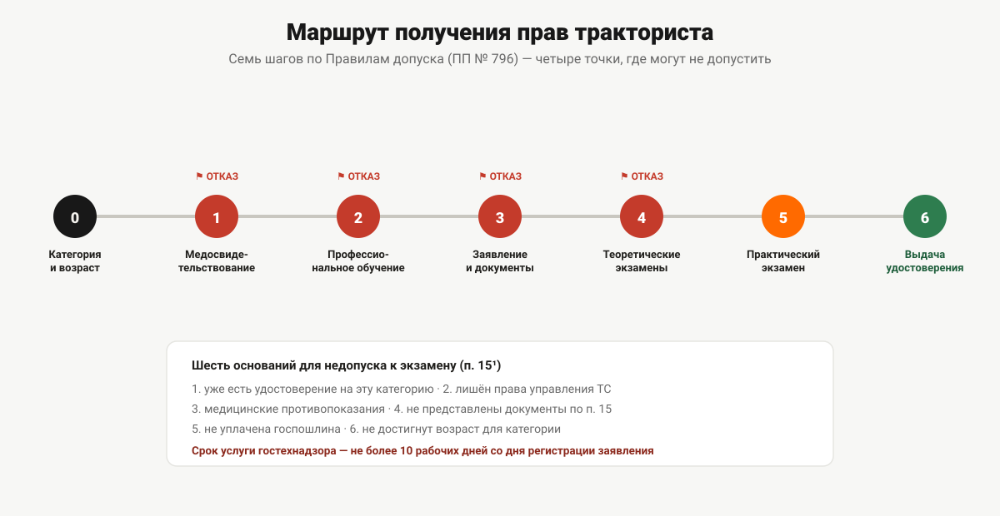

Как получить права тракториста-машиниста
От выбора категории до пластикового удостоверения: медзаключение, обучение, документы, три экзамена и выдача. Порядок шагов и что на каждом из них может пойти не так.
Шесть шагов между решением «пора получать права на трактор» и пластиковым удостоверением в кармане. На четырёх из этих шагов кандидата можно остановить — не потому что процедура запутанная, а потому что у каждого шага есть формальное условие, которое либо выполнено, либо нет. Дальше — весь маршрут по Правилам допуска к управлению самоходными машинами (постановление Правительства РФ от 12.07.1999 № 796, действует до 1 сентября 2028 года): что нужно на каждом шаге и где чаще всего спотыкаются.

Шаг 0. Определить категорию и проверить возраст
Прежде чем что-либо оформлять, нужно понять, на какую категорию учиться: категории тракториста-машиниста никак не связаны с автомобильными и определяются мощностью двигателя, типом хода или назначением техники. Полный разбор всех девяти категорий — в статье «Категории удостоверения тракториста-машиниста».
Заодно стоит сверить возраст: для разных категорий Правила допуска устанавливают разные пороги — от 16 лет для внедорожной мототехники до 22 лет для категории A IV. Если возраст не подходит, все остальные шаги смысла не имеют.
Шаг 1. Медицинское освидетельствование
Дальше нужно медицинское заключение о наличии (об отсутствии) у трактористов, машинистов и водителей самоходных машин медицинских противопоказаний, показаний или ограничений — отдельный документ по форме № 071/у, не совпадающий со справкой для водителей автотранспорта. Без него к экзаменам не допускают: это прямое условие пункта 11 «б» Правил допуска. Что именно проверяют в рамках этого заключения и чем оно отличается от привычной водительской медсправки — в статье «Медицинское заключение по форме 071/у».
Первая точка отказа: медицинские противопоказания к управлению самоходными машинами — самостоятельное основание, по которому к экзамену не допустят, независимо от того, пройдены ли остальные шаги.
Шаг 2. Профессиональное обучение
Пункт 11 «в» Правил допуска требует профессионального обучения в организации, осуществляющей образовательную деятельность и имеющей свидетельство о соответствии требованиям оборудования и оснащённости образовательного процесса для подготовки трактористов, машинистов и водителей самоходных машин. Это отдельное свидетельство, а не общая образовательная лицензия: без него организация не вправе готовить кандидатов, которых допустят к экзамену в гостехнадзоре.
Объём обучения задают типовые программы Минсельхоза России — по большинству категорий это 450 академических часов, у категории F больше. Как именно распределены эти часы по предметам и во что они превращаются в календаре — в статье «Сколько длится обучение на тракториста». С тем, какие категории заявлены в тракторном направлении «Авто-Класса» в Перми, можно ознакомиться на странице направления.
По итогам обучения кандидату выдают документ о квалификации — свидетельство о профессии рабочего. Правила допуска допускают представить его при подаче документов по собственной инициативе (то есть необязательно, но на практике это единственное подтверждение, что профессиональное обучение вообще пройдено).
Шаг 3. Подача заявления и документов в гостехнадзор
Дальше — обращение в орган гостехнадзора по месту жительства (регистрации) или по месту нахождения учебной организации, где кандидат прошёл обучение. Пункт 15 Правил допуска перечисляет, что нужно представить: заявление, паспорт, медицинское заключение, фотографии (если удостоверение не изготавливают автоматизированно в самом органе), и по желанию заявителя — документ о квалификации, ранее выданное удостоверение (если было) и, для категорий A II–A IV, российское водительское удостоверение. Полный список с пояснениями, что обязательно, а что подаётся по инициативе заявителя, — в статье «Документы для получения прав тракториста».
Заявление можно подать и в электронной форме — через Единый портал государственных и муниципальных услуг или региональный портал, с простой либо усиленной неквалифицированной электронной подписью (пункт 15² Правил допуска).
После рассмотрения документов кандидату назначают место, дату и время сдачи экзаменов (пункт 16).
Шаг 4. Теоретические экзамены
Экзамены сдаются в строго заданной последовательности: сначала теория, затем практика. Теоретическая часть состоит из двух экзаменов — по безопасной эксплуатации самоходных машин (для категории F и тех, кто получает квалификацию «тракторист-машинист», содержание шире) и по правилам дорожного движения. Не сдавшего теорию к практике не допустят: пункт 19 Правил допуска формулирует это прямо, без исключений.
Как устроена вся процедура целиком — какие требования к экзаменатору, что оформляют, сколько действует оценка за теорию — в статье «Экзамен в гостехнадзоре: как он устроен».
Шаг 5. Практический экзамен
Практика принимается в два этапа: сначала на закрытой от движения площадке или трактородроме, потом на специальном маршруте в условиях реального функционирования машины. Ко второму этапу не допускают, пока не сдан первый (пункт 22² Правил допуска). Полный перечень манёвров, требования к экзаменационной технике и порог сдачи — в статье «Практический экзамен на самоходной машине».
Шаг 6. Получение удостоверения
Удостоверение выдаёт орган гостехнадзора по месту сдачи экзаменов, под расписку, при предъявлении документа, удостоверяющего личность (пункты 31–32). Помимо бумажного бланка, по желанию заявителя может быть оформлено удостоверение в виде электронного документа — при технической возможности Единого портала и информационных систем органа гостехнадзора (пункт 10). Срок действия удостоверения — 10 лет (пункт 34).
Шесть оснований, по которым не допустят к экзамену
Пункт 15¹ Правил допуска перечисляет, при каких обстоятельствах кандидата не допускают к сдаче экзамена — это закрытый список из шести пунктов:
- уже есть удостоверение на управление машинами тех же категорий, на которые сдаются экзамены (кроме отдельных случаев замены, описанных в пунктах 36, 39 и 44 Правил);
- лишён права управления транспортными средствами, и срок лишения ещё не истёк;
- есть медицинские противопоказания к управлению самоходными машинами;
- не представлены документы, перечисленные в пункте 15 Правил;
- не уплачена государственная пошлина за выдачу удостоверения;
- не достигнут возраст, установленный для соответствующей категории.
По пошлине норма конкретна: не уплачена — не допустят. Сколько именно она составляет по действующей редакции Налогового кодекса и кто от неё освобождён — в статье «Госпошлина за удостоверение тракториста».
Сроки, которые обязан соблюдать орган гостехнадзора
Пункт 45² Правил допуска задаёт процедурные сроки государственной услуги — и здесь важно не путать их со сроком обучения:
- срок предоставления услуги — не более 10 рабочих дней со дня регистрации заявления;
- приостановление услуги, если оно случилось, — не более 30 календарных дней;
- срок выдачи документов после успешной сдачи экзаменов — не более 2 рабочих дней.
Это регламент работы самого органа гостехнадзора: сколько он вправе рассматривать заявление и оформлять результат. Календарный срок обучения (шаг 2) в эти цифры не входит и зависит от расписания конкретной учебной организации и объёма программы — этому посвящена отдельная статья, на которую уже была ссылка выше.
Если что-то пошло не так на конкретном шаге
Застряв на любом из шести шагов — не получили медзаключение, не хватает часов или документа, не сдали теорию или практику, — маршрут не нужно начинать заново: закрывается именно тот шаг, на котором произошла остановка, ссылки на подробный разбор каждого шага — в тексте выше. Исключение — две ситуации, где промедление действительно возвращает назад: истекает трёхмесячный срок действия сданной теории или накапливаются три подряд несданные попытки практики. Что делать в обоих случаях — в статье «Что делать, если не сдал экзамен».